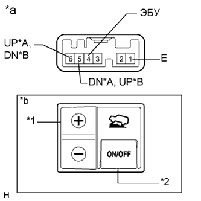

СИСТЕМА КУРСОВОЙ УСТОЙЧИВОСТИ (для моделей с гидравлическим усилителем тормозной системы) > Контрольная лампа системы CRAWL не включается |
| 1.ПРОВЕРЬТЕ ЛИНИЮ ПЕРЕДАЧИ ДАННЫХ CAN |
Выключите зажигание.
Подсоедините портативный диагностический прибор к DLC3.
Включите зажигание (IG).
Включите портативный диагностический прибор.
Выберите "CAN Bus Check" (проверка шин CAN) в меню "System Selection" и следуйте подсказкам на экране, чтобы проверить шину CAN (для моделей с левосторонним рулевым управлением и системой посадки и запуска Нажмите здесь, для моделей с правосторонним рулевым управлением и системой посадки и запуска Нажмите здесь).
| Результат | Следующий шаг |
| OK | А |
| NG (для моделей с левосторонним рулевым управлением и системой посадки и запуска) | B |
| NG (для моделей с правосторонним рулевым управлением и системой посадки и запуска) | C |
|
| ||||
|
| ||||
| А | |
| 2.ПРОВЕРЬТЕ DTC |
Проверьте коды DTC (Нажмите здесь).
| Результат | Следующий шаг |
| DTC не выводится | А |
| DTC выводится | B |
|
| ||||
| А | |
| 3.СНИМИТЕ ПОКАЗАНИЯ ПОРТАТИВНОГО ДИАГНОСТИЧЕСКОГО ПРИБОРА (ПЕРЕКЛЮЧАТЕЛЬ CRAWL) |
Выключите зажигание.
Подсоедините портативный диагностический прибор к DLC3.
Включите зажигание (IG).
Включите портативный диагностический прибор.
Войдите в следующие меню: Body Electrical / D-SEAT SW / Data List.
| Информация на дисплее прибора | Измеряемая величина / диапазон измерения | Нормальное состояние | Замечание по диагностике |
| Crawl Control Main Switch | Переключатель Crawl (выключатель ON/OFF) / ON (ВКЛ) или OFF (ВЫКЛ) | ON (ВКЛ): переключатель Crawl включен OFF (ВЫКЛ): переключатель Crawl выключен | - |
| Crawl Control Up Switch | Переключатель Crawl (переключатель увеличения скорости) / ON (ВКЛ) или OFF (ВЫКЛ) | ON (ВКЛ): переключатель увеличения скорости нажат и удерживается OFF (ВЫКЛ): переключатель увеличения скорости не нажат | - |
| Crawl Control Down Switch | Переключатель Crawl (переключатель уменьшения скорости) / ON (ВКЛ) или OFF (ВЫКЛ) | ON (ВКЛ): переключатель уменьшения скорости нажат и удерживается OFF (ВЫКЛ): переключатель уменьшения скорости не нажат | - |
|
| ||||
| OK | |
| 4.СНИМИТЕ ПОКАЗАНИЯ ПОРТАТИВНОГО ДИАГНОСТИЧЕСКОГО ПРИБОРА (КОНТРОЛЬНАЯ ЛАМПА CRAWL) |
Выключите зажигание.
Подсоедините портативный диагностический прибор к DLC3.
Включите зажигание (IG).
Включите портативный диагностический прибор.
Войдите в следующие меню: Chassis / ABS/VSC/TRC / Data List.
| Информация на дисплее прибора | Измеряемая величина / диапазон измерения | Нормальное состояние | Замечание по диагностике |
| Crawl Control Light | Контрольная лампа Crawl / ON (ВКЛ) или OFF (ВЫКЛ) | ON (ВКЛ): контрольная лампа включена OFF (ВЫКЛ): контрольная лампа выключена | - |
Выполняя испытание Crawl Control Light в режиме Active Test, следите за параметром Crawl Control Light в списке Data List (Нажмите здесь).
| Информация на дисплее прибора | Испытываемое устройство | Диапазон регулирования | Замечание по диагностике |
| Crawl Control Light | Контрольная лампа Crawl | Включение / выключение контрольной лампы | Следите за индикацией на щитке приборов |
| Результат | Следующий шаг | |
| Экран Data List | Показания Data List при изменении установки ON/OFF (ВКЛ/ВЫКЛ) в режиме Active Test | |
| ON (ВКЛ) | Изменяется между ON (ВКЛ) и OFF (ВЫКЛ) | А |
| Не изменяется между ON (ВКЛ) и OFF (ВЫКЛ) (для моделей с левосторонним рулевым управлением) | B | |
| Не изменяется между ON (ВКЛ) и OFF (ВЫКЛ) (для моделей с правосторонним рулевым управлением) | C | |
| OFF (ВЫКЛ) | Изменяется между ON (ВКЛ) и OFF (ВЫКЛ) | А |
| Не изменяется между ON (ВКЛ) и OFF (ВЫКЛ) (для моделей с левосторонним рулевым управлением) | B | |
| Не изменяется между ON (ВКЛ) и OFF (ВЫКЛ) (для моделей с правосторонним рулевым управлением) | C | |
|
| ||||
|
| ||||
| А | ||
| ||
| 5.ПРОВЕРЬТЕ ЖГУТ ПРОВОДОВ И РАЗЪЕМ (ПЕРЕКЛЮЧАТЕЛЬ CRAWL – ЭБУ ПЕРЕКЛЮЧАТЕЛЯ ПОМОЩИ ПРИ ДВИЖЕНИИ) |
Отсоедините разъем G125 переключателя системы Crawl.
Отсоедините разъем G76 ЭБУ переключателя помощи при движении.
Измерьте сопротивление в соответствии со значениями, приведенными в таблице ниже.
| Контакты для подключения диагностического прибора | Условие | Заданные условия |
| G125-4 (ECU) - G76-15 (SWI3) | Всегда | Менее 1 Ом |
| G125-4 (ECU) - масса | Всегда | 10 кОм или более |
| G125-6 (UP) - G76-13 (SWI4) | Всегда | Менее 1 Ом |
| G125-6 (UP) - масса | Всегда | 10 кОм или более |
| G125-5 (DN) - G76-14 (SWI5) | Всегда | Менее 1 Ом |
| G125-5 (DN) - масса | Всегда | 10 кОм или более |
| G125-1 (E) - масса | Всегда | Менее 1 Ом |
| Контакты для подключения диагностического прибора | Условие | Заданные условия |
| G125-4 (ECU) - G76-15 (SWI3) | Всегда | Менее 1 Ом |
| G125-4 (ECU) - масса | Всегда | 10 кОм или более |
| G125-5 (UP) - G76-13 (SWI4) | Всегда | Менее 1 Ом |
| G125-5 (UP) - масса | Всегда | 10 кОм или более |
| G125-6 (DN) - G76-14 (SWI5) | Всегда | Менее 1 Ом |
| G125-6 (DN) - масса | Всегда | 10 кОм или более |
| G125-1 (E) - масса | Всегда | Менее 1 Ом |
|
| ||||
| OK | |
| 6.ПРОВЕРЬТЕ ПЕРЕКЛЮЧАТЕЛЬ CRAWL |
Снимите переключатель системы Crawl (Нажмите здесь).
|  |
Измерьте сопротивление в соответствии со значениями, приведенными в таблице ниже.
| Контакты для подключения диагностического прибора | Положение переключателя | Заданные условия |
| 6 (UP) - 1 (E) | + | Менее 1 Ом |
| FREE | 10 кОм или более | |
| 5 (DN) - 1 (E) | - | Менее 1 Ом |
| FREE | 10 кОм или более | |
| 4 (ECU) - 1 (E) | ON (ВКЛ) / OFF (ВЫКЛ): Нажат | Менее 1 Ом |
| ON (ВКЛ) / OFF (ВЫКЛ): Не нажат | 10 кОм или более |
| Контакты для подключения диагностического прибора | Положение переключателя | Заданные условия |
| 5 (UP) - 1 (E) | + | Менее 1 Ом |
| FREE | 10 кОм или более | |
| 6 (DN) - 1 (E) | - | Менее 1 Ом |
| FREE | 10 кОм или более | |
| 4 (ECU) - 1 (E) | ON (ВКЛ) / OFF (ВЫКЛ): Нажат | Менее 1 Ом |
| ON (ВКЛ) / OFF (ВЫКЛ): Не нажат | 10 кОм или более |
| *A | Для моделей с левосторонним рулевым управлением |
| *B | Для моделей с правосторонним рулевым управлением |
| *1 | Переключатель выбора скорости |
| *2 | Выключатель ON/OFF (ВКЛ/ВЫКЛ) |
| *a | Устройство с неподсоединенным жгутом проводов (переключатель Crawl) |
| *b | На рисунке показан переключатель для моделей с левосторонним рулевым управлением |
|
| ||||
| OK | ||
| ||